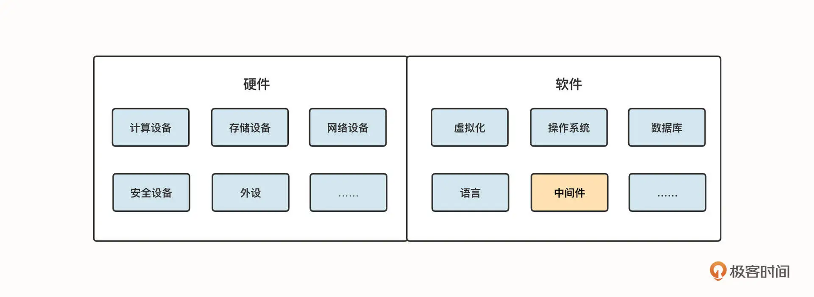

- 00 开篇词 为什么中间件对分布式架构体系来说这么重要？.md.html
- 01 中间件生态（上）：有哪些类型的中间件？.md.html
- 02 中间件生态（下）：同类型的中间件如何进行选型？.md.html
- 03 数组与链表：存储设计的基石有哪些？.md.html
- 04 红黑树：图解红黑树的构造过程与应用场景.md.html
- 05 多线程：多线程编程有哪些常见的设计模式？.md.html
- 06 锁：如何理解锁的同步阻塞队列与条件队列？.md.html
- 07 NIO：手撸一个简易的主从多Reactor线程模型.md.html
- 08 Netty：如何优雅地处理网络读写，制定网络通信协议？.md.html
- 08 加餐 中间件底层的通用设计理念.md.html
- 09 技术选型：如何选择微服务框架和注册中心？.md.html
- 10 设计原理：Dubbo核心设计原理剖析.md.html
- 11 案例：如何基于Dubbo进行网关设计？.md.html
- 12 案例：如何实现蓝绿发布？.md.html
- 13 技术选型：如何根据应用场景选择合适的消息中间件？.md.html
- 14 性能之道：RocketMQ与Kafka高性能设计对比.md.html
- 15 案例：消息中间件如何实现蓝绿？.md.html
- 16 案例：如何提升RocketMQ顺序消费性能？.md.html
- 17 运维：如何运维日均亿级的消息集群？.md.html
- 18 案例：如何排查RocketMQ消息发送超时故障？.md.html
- 19 案例：如何排查RocketMQ消息消费积压问题？.md.html
- 20 技术选型：分布式定时调度框架的功能和未来.md.html
- 21 设计理念：如何基于ZooKeeper设计准实时架构？.md.html
- 22 案例：使用分布式调度框架该考虑哪些问题？.md.html
- 23 案例：如何在生产环境进行全链路压测？.md.html
- 大咖助阵 高楼：我们应该如何学习中间件？.md.html
- 用户故事 学而时习之，不亦乐乎.md.html
- 用户故事 愿做技术的追梦人.md.html
- 用户故事 浪费时间也是为了珍惜时间.md.html
- 结束语 坚持不懈，越努力越幸运.md.html
- 捐赠
大咖助阵 高楼：我们应该如何学习中间件？
今天我想跟你聊聊我对技术的看法。
最近我在做一些技术岗位的面试。面试过程一般是这样，首先，我会根据简历上的描述进行一些常规的提问。在这之后呢，我还会问一些技术的细节和原理。但是很遗憾，我面试十个人，也不见得能有一个半个能对技术细节有深刻的领悟。
举一个我今天在面试中问到的一个问题，“我们如何确定一个 ES 的线程数是够用的？”面试的人想了很久也没回答出个所以然来。然后我又继续往基础里问：“那在操作系统上，我们如何理解 load average 这个数据的含义呢？”对方的回答是，这是 cpu 的队列，这个值不高于 cpu 的个数即为正常。这句话明显是在网络上的各种文章里看到的。然后我又问：“只有 cpu 的队列吗？那如何通过这个值来判断处理问题的方向呢？”面试者又回答不出来了。
我们对底层的掌握还远远不够
这个面试者就是我说的对技术细节的掌握还不够精确。而且这还不是个例，在我的面试经历中，很多人面对类似的问题都没有给出明确的、有逻辑的回答。
也许你要说，没有一个人可以完全掌握所有技术，这取决于岗位的要求。确实，对于一份养家糊口的工作来说，我们卖出时间换来生存的资本，在一个岗位上能够尽职尽责已经非常难得了。
我们的职位是有技能范围的要求的，企业招人，会先给出岗位和 JD，这时候你只要满足这个技能要求就可以了。但是从个人技能在市场上的竞争力来看，我们还有技能范围的要求吗？当你的能力大于岗位的技能要求时，那必然是有更多工作机会的。
如今技术仍然在飞速发展，技术市场上充斥着花里胡哨的上层应用，但是我们不得不承认一个事实，那就是当今人们对技术的敬畏仍然非常有限，对底层的掌握和了解也远没有达到脱贫的水平。而中间件就是其中一个薄弱的环节。
我们应该如何学习中间件？
如果我们把技术粗略地划分为软件和硬件，它包含的内容大概如下图所示：

当今的互联网行业，技术复杂度越来越高，中间件是一个绕不开的话题。以前，由于技术架构单一，中间件无非就是那么几个。但是随着分布式、微服务的兴起，中间件的范畴越来越大。这些中间件你不需要全都非常精通，但你至少要精通那么一两个。而且，在有新的需要的时候，还得能够快速掌握它们。怎么做呢？我们从下面三个方面来拆解一下：
- 技术操作能力；
- 原理理解能力；
- 综合判断能力。
技术操作能力
不管你去学习什么技能，一开始要具备的一定是动手能力。
有些人只知道概念，抬手就忘记操作方法，这类人我是不相信有什么发展前途的。有人说他熟悉 Redis，但是聊到 Redis 的操作细节却连常规的操作命令都不清楚，这样的人你敢让他去处理 Redis 的问题吗？那显然是不行的。
操作能力如何锻炼呢？只有一个招，那就是：动手。把一个命令操作个一万遍，即便你不想记住，抬起手来也能行云流水地操作下来。这就像跑步的时候，你一开始可能连 500 米都跑不动，但是你坚持一年，再抬起腿来的时候，腿的肌肉记忆就能自然而然地带着你往前跑。所以我绝对不相信那些说什么都接触过，但是一谈到细节就记不清楚的人。
我记得我几年前参加过一个技术研讨会。会后吃饭的时候，我们又聊起来一个技术细节，是关于数据库的。聊到一半，有个人直接把笔记本电脑拿出来，把具体的技术细节给我们操作了一遍。我当时就非常欣赏他。当然，他是一个做了二十年的数据库专家，技术过硬，但我并不是欣赏他的技术，而是欣赏他对技术这种认真的态度。
不过说归说，面对现在市场上五花八门的中间件，要想完全地掌握所有的操作细节也是不现实的。但是你要在至少在一个类型的中间件上做到拔尖。俗话说文无第一、武无第二，在我看来，技术行业也属于武行，不会就是不会，只有去练习，不需要解释和狡辩。
在中间件的学习上，我建议的学习路径是下面这样的。
首先要学一个关系型数据库。虽然现在的内存数据库、文档数据库、时序数据库等等已经有很多种了，但是关系型数据库仍然是不能被忽视的。至少现在不太可能抛弃掉关系型数据库，而其他的数据库都是在关系型数据库适应不了某类场景时衍生出来的。比如你做一个文档全文搜索，这时候如果你一定要用 MySQL 那就是在跟自己赌气了，因为选择 Elasticsearch 是更合理的，它就是为此而生的。同样，如果你做一个金融交易系统（如数字货币）而不考虑时序数据库，那也会产生技术债。
那为什么我还要强调学习关系型数据库呢？因为关系型数据库的技术特点（比如 ACID）决定了它的应用场景。对于一些核心系统的数据持久化来说，关系型数据库仍然是首选。而且当你完全掌握了一个关系型数据库，你再去看其他的数据库都会觉得“怎么这么简单”。
具体来说，我推荐你学习 MySQL。因为它用户群大，资料多，免费又开源。
其次，学习缓存和队列。对于现在流行的技术栈来说，缓存和队列对分布式架构的作用那是相当的大。再加上现在的系统容量越来越大，为了应对海量请求，缓存可以大幅提高容量，而队列则可以降低系统产生的瞬间冲击。
这里我推荐学习 Redis 和 Kafka。原因也是差不多的，它们的用户群大，资料多，还免费开源。
接下来，你要学习负载均衡相关的知识。不懂负载均衡是不可能理解架构的（只理解负载均衡也不能理解架构）。负载均衡可以为系统提供更高的吞吐能力。不管是软负载还是硬负载，不管是四层还是七层，负载均衡的目标都是为了让系统的容量变得更大。这里我推荐你学习的是 Nginx。
第四点，你要学习一门语言。
有一点是确定的，那就是一个开发工程师因为对语言更理解，所以对一些技术细节的掌握比很多其他岗位要扎实一些。而我们现在所有的系统，除了一些常见的固定技术组件外，开发工程师编写的代码是一大变量。
但是很多人因此把 IT 行业的开发岗看得特别高，一有问题就是“找开发”，似乎开发可以给我们解决各种问题。我特别不能理解这一点，因为从我的技术和管理经历上来看，开发的能力差异是很大的。有很多开发只关注业务代码的实现，对其他的内容也是一知半解。前几天在项目上和一个干了多年的开发处理一个问题，我已经告诉他是哪段代码有问题了，但他还是一直在说”我们再试试”，试了两个半小时毫无进展，最后还是回到我一开始判断的方向上。
说这些不是为了贬低开发这个职位，而是说每个人都有自己的知识范围，我们不能过于依赖开发，要自己学着去理解开发语言的运行逻辑。因为所有的软件系统都是由开发语言编写出来的，当你学会一门语言之后，就可以对很多软件系统有更深入理解的机会。在分析技术问题时有更多的洞见和能动性。
我认为，对于应用层的开发，学习 Java 或者 Python 任意一门语言即可。
第五点，学习操作系统。之所以在最后才提及操作系统，主要是因为我们在讲中间件，自然要把中间件往前放。不过在我看来，所有的技术栈，不管你玩什么，也不管你在什么岗位，操作系统都是绕不过去的基础技能，不懂操作系统就不能说是干技术的。操作系统的文件操作、用户操作、网络操作、配置操作等等都是我们”必备”的技能。
我推荐学习的操作系统非 Linux 莫属，任意一个发行版都可以。毕竟 Windows 在服务端领域还是跟不上溜的。
学过了数据库、缓存、队列、负载均衡，掌握一到两门常用的语言，也清楚操作系统的基本玩法，就可以说有了技术操作能力了，那下一步就是培养原理理解能力了。
原理理解能力
这些年，我深感技术行业中大家原理理解能力的欠缺。我们不管是在大学，还是在职场，都常常忽视原理。而当前云计算的发展让大量的 IT 技术人员失去了对基础技术组件的操控权，我们对原理的理解能力就更弱了。在中间件上的表现就是，云环境给我们提供了应用级的操作入口，但是却关闭了我们进一步理解原理的权限。
像网络、存储、数据库、缓存、队列等这些组件，如果是一个应用层的 IT 技术人员，公司可能会考虑到安全问题而限制他们的权限。从管理上来说，这种限制无可厚非，但在能力的培养上，那绝对是越走越窄的路子。
既然在应用层的原理已经是很多人的薄弱环节了，那像这个专栏中提到的多线程模式、锁、数组与链表等等就更需要功力了。
我建议要想学习原理，就去看具体技术组件的实现逻辑。通俗点说就是翻代码。不是要你去开发这些底层逻辑，而是要完全掌握，只有完全掌握了才能用得流畅。比如在 Java 中，如果我们不能理解多线程的原理，就不可能设计出高性能、低延迟的系统；在网络中，不理解阻塞 / 非阻塞 IO、同步 / 异步 IO，就不可能设计出适合业务逻辑的架构。
这里为什么我没有拿某个具体的中间件来举例子呢？因为我们现在提到的大部分中间件，从操作系统的视角来看，都只是一个又一个的软件，这些软件都必然遵循同样的底层原理。中间件是为了特定场景而存在的，但底层逻辑不会有变化。
就像协议一样，我们用了几十年的 HTTP1.1 了，虽然现在 HTTP2.0、3.0 都已经出现了，但是 HTTP1.1 依然在互联网上大量存续。你理解了 HTTP1.1 之后，2.0、3.0 也很容易掌握。
所以我强烈建议你关注原理层面的理解能力。在上层应用日新月异的时候，我们在技术实现层面消耗了太多精力。如果年轻人都只是将青春倾注在面对用户的应用系统上，习惯性地忽略底层原理，那我们技术市场的生命力就会越来越弱。
综合判断能力
有了上面的两种能力之后，就必须进入到第三重技术功力了：综合判断能力。
也许你会有这种感觉，在技术的汪洋大海之中摸索了很多年，操作能力已经非常强了，原理也大都能理解，但是仍然无法快速处理问题。这就说明你缺乏综合判断能力。
在我们有了技术操作能力和原理理解能力之后，其实还需要把技术栈梳理一遍，将这些散乱的知识点连接起来，形成自己的综合判断能力。
我们经常会看到这样的场景，一个项目遇到了技术问题，卷入了很多技术大牛一起分析，这时候的沟通成本比解决技术问题本身花费的时间多得多。
举例来说，当你看到一个中间件跑在一个 K8s+Docker 的微服务分布式技术栈中的时候，如果中间件把 CPU 使用率消耗到 100%，我们能不能在五分钟之内确定这是哪一段代码或配置导致的呢？
如果你是有经验的，我觉得五分钟都长了。在这个具体的场景中，可能你只需要执行一段脚本，一分钟就可以告诉别人这是哪一段代码或配置惹的祸。但是这个分析过程是需要有证据链的，这个证据链的梳理过程就需要你有足够的技术操作能力和原理理解能力。
当我们分析这个问题时，首先要判断是什么 CPU 使用率达到了 100%，是 us、sy 还是 wa、si？我们在分析中间件的时候，每个不同的 CPU 计数器会给出明确的方向，如果是 us CPU 使用率高，你却一直在往如何减少中间件的读写上使劲，那必然是南辕北辙了。
再比如，当我们发现队列服务器中有大量积压的消息时，我们要判断的方向就非常多。是消费者能力不行了？还是网络阻塞了？还是计算能力到头了？分析和解决这样的问题，都需要我们的综合判断能力。
我们不可能完全掌握所有的技术细节，但是当你有了自己的综合判断方法论之后，遇到没有见过的技术难题也就不会发怵了。综合判断能力就像灯塔一样，可以给你指明方向，而不至于摸不着头脑地告诉别人“再试一遍”。
总结
总结一下。技术操作能力是每个 IT 从业人员的基础，原理理解能力是提升自己的必经过程，综合判断能力是让你成为技术人中龙凤的唯一可能。
在一层一层向上探索的过程中，人的惰性是必然要攻克的难关。我看到有很多技术人，一遇到简单的技术操作，就有点不屑一顾，不愿意花更多时间去深入学习。这样就容易慢慢丧失掉操作能力，是技术成长过程中的大忌。
也许你也遇到过这样的人，当他在计算一道题“一排 4 颗树，一种 4 排，共有几颗树”时，可以非常快速的告诉你是 16 颗树。但当你把树换成电线杆子的时候，他就不会算了。这就是缺乏技术操作能力的一种表现。
原理理解能力虽然没有技术操作能力那么显性，但是在能力提升速度上会有明确的差异。就像有的企业只招 985、211 出来的学神一样，虽然不是所有的 985、211 出来的人都比大专生强，但是从比例上来说，你不得不承认，好学校出来的学生，他们的知识积淀确实比大专生更深厚，学习新技能也会更快（这里只是类比，并不特指）。技术也是类似的，当你掌握了技术的原理之后，你会进入一个触类旁通的境界。
综合判断能力是每一个技术岗位都应该努力拥有的一种能力。只有拥有这种能力才能真的变成某个领域中的真正的专家。因为综合判断能力带来的直接优势就是，你可以处理得了别人处理不了的问题，看到别人看不到的风险。
从我对技术市场的理解来看，我们仍然需要更多的人一起去理智思考，反思我们缺少什么，然后去弥补缺少的东西，这样才有机会让技术市场更进一步。如果像一些互联网企业一样，只是追逐利益，不断推陈出新想着如何设计出赚钱的系统，每天想的都是如何割韭菜，而不为市场的良性发展负责，最终的结果就是百业凋敝。
技术的发展说到底还是靠市场上的这些技术人，希望我们每个技术人都可以理智地提升自己的综合技术素养，一起成长进步，让我们的技术市场越来越强悍。
© 2019 - 2023 Liangliang Lee. Powered by gin and hexo-theme-book.